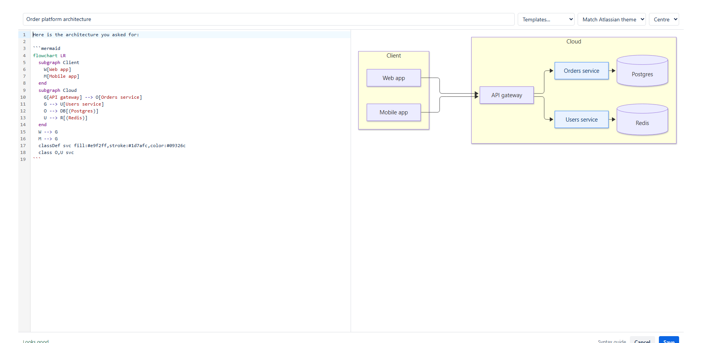

Mermaid Canvas for Confluence and Jira
Write a diagram as text, see it drawn. This guide covers everything the app does.
Confluence: add a diagram
Mermaid is a way to write a diagram as text. For example "A --> B" draws box A with an arrow to box B. You do not need to learn it: pick a template and change the words.

- Edit a page, type
/mermaidand pick Mermaid Diagram. - Paste your Mermaid code, or choose a starter from Templates.
- Add a caption if you like, pick a colour theme and alignment, then click Save.
To change a diagram later, edit the page, select the diagram and click the pencil icon.
Pasting straight from ChatGPT, Claude, GitHub or a README is fine. The app removes the ```mermaid fences, stray text around them, odd spaces and Windows line breaks.
Reading a diagram
- Hover to show the toolbar: zoom in, zoom out, reset, full screen, download PNG, copy code.
- Hold Ctrl (Cmd on Mac) and scroll to zoom. Drag to move around when zoomed. Double-click to reset.
- Links written with
click A href "https://..."open in a new tab. - The Match Atlassian theme setting follows light and dark mode.
PDF and Word export
When you save a diagram, the app attaches a picture of it to the page (named mermaid-diagram-....png). Exports use that picture. Diagrams added before this picture existed export as their Mermaid code; open and save them once to add the picture.
Jira: diagrams on an issue
Open an issue, click the Mermaid Diagrams button under the summary, then Add diagram. You can add several. Anyone who can edit the issue can edit its diagrams.
Jira: issue map
The Issue map tab draws the issue together with its parent, child issues, subtasks and linked issues ("blocks", "relates to" and so on). Boxes are grey for To do, blue for In progress and green for Done. Click a box to open that issue. Large epics show the first 60 issues.
Supported diagrams
Everything in the current Mermaid release, including flowchart, sequence, class, state, entity relationship, Gantt, user journey, pie, quadrant, timeline, mind map, Git graph, C4, sankey, XY chart, block, architecture, kanban, packet, radar and treemap. Full syntax: mermaid.js.org.
Fixing errors
If the code has a mistake, the editor names the line and keeps showing your last working diagram until it's fixed. The most common cause is a missing first line such as flowchart TD or sequenceDiagram.
Moving from another Mermaid app
Open the old macro, copy the Mermaid text, insert Mermaid Diagram, paste and Save. Code fences, stray text and odd spaces are cleaned on paste. Diagrams in the other app keep working until you remove that app.